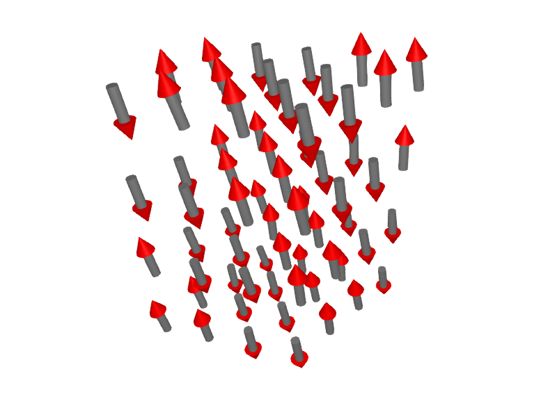
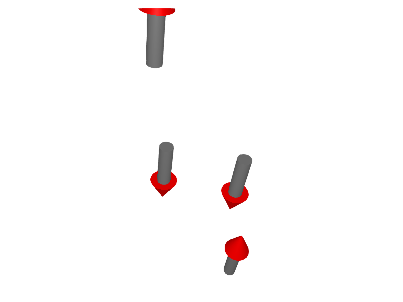
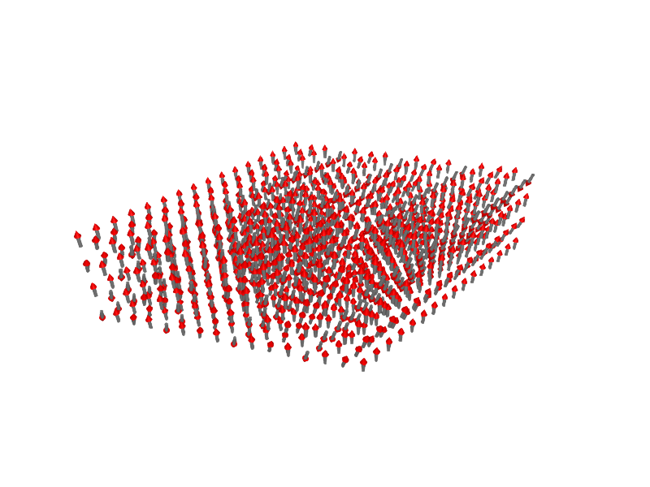
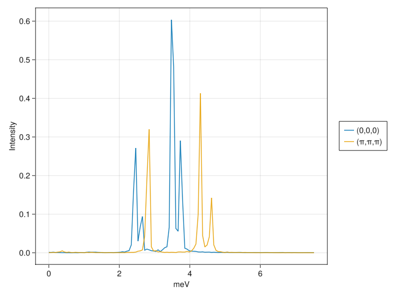
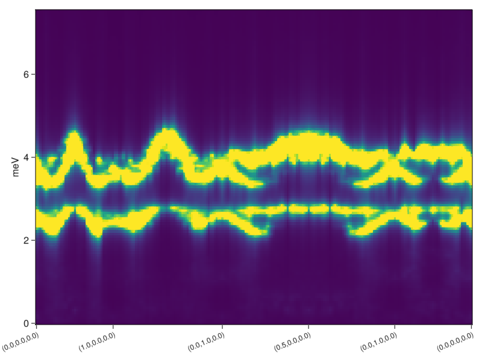
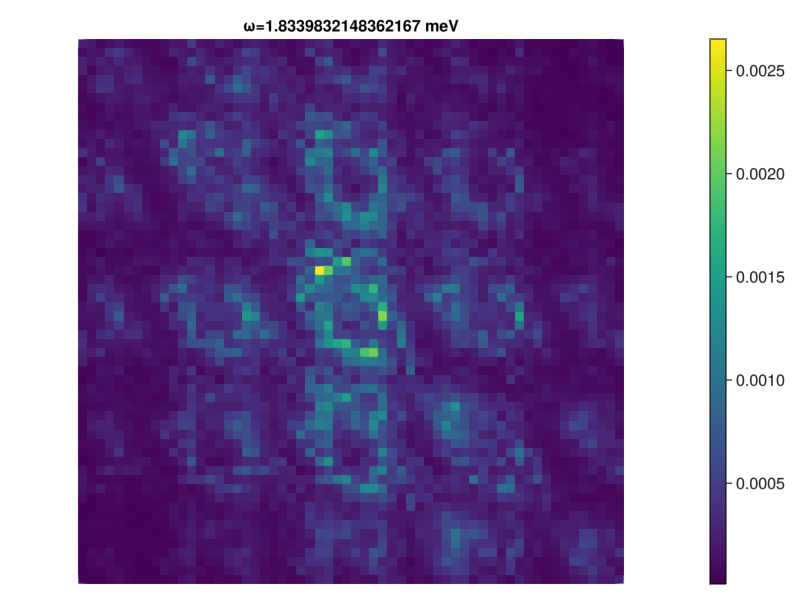
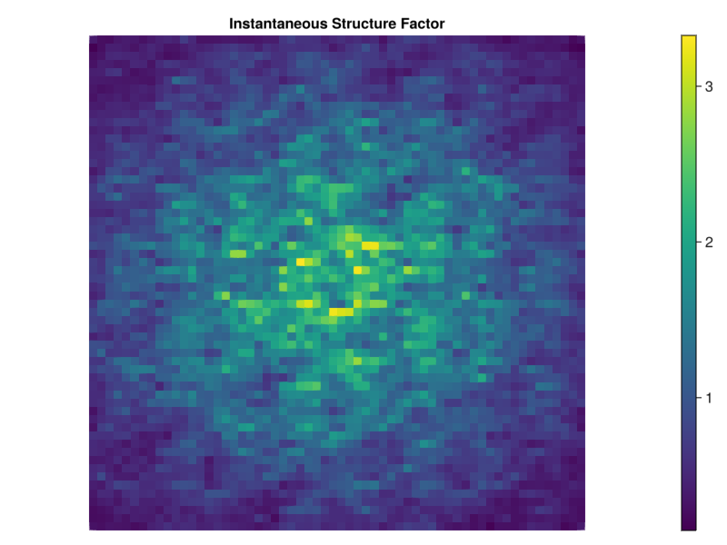
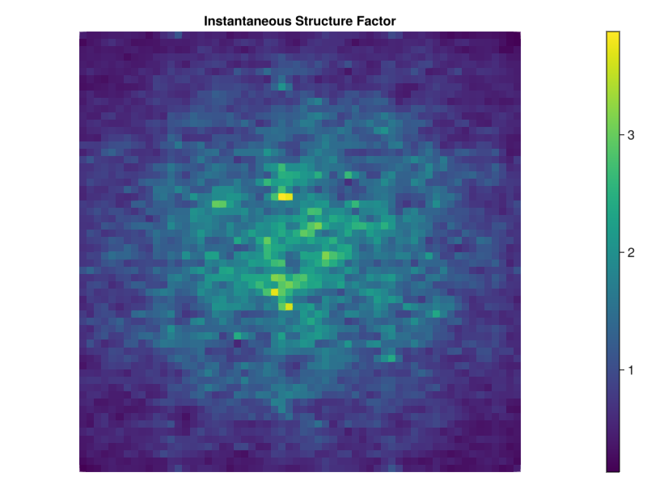

Case Study: FeI$_{2}$
FeI$_2$ is an effective spin-1 material with strong single-ion anisotropy. Quadrupolar fluctuations give rise to a single-ion bound state that cannot be described by a dipole-only model. This tutorial illustrates how to use the classical dynamics of SU(N) coherent state to model the magnetic behavior in FeI$_2$. The original study was performed in Bai et al., Nature Physics 17, 467–472 (2021).

The Fe atoms are arranged in stacked triangular layers. The effective spin interactions include various anisotropic exchange interactions, and a strong single-ion anisotropy:
\[\mathcal{H}=\sum_{(i,j)} J^{\alpha\beta}_{ij} S^{\alpha}_i S^{\beta}_j - D\sum_i \left(S^z\right)^2\]
We will formulate this Hamiltonian in Sunny and then calculate its dynamic structure factor.
Begin by importing Sunny and GLMakie, a plotting package.
using Sunny, GLMakieIf you see an error Package <X> not found in current path, add the package by typing ] add <X> at the Julia prompt.
Crystals and symmetry analysis
A Crystal describes the crystallographic unit cell and will usually be loaded from a .cif file. Here, we instead build a crystal by listing all atoms and their types.
a = b = 4.05012 # Lattice constants for triangular lattice
c = 6.75214 # Spacing in the z-direction
latvecs = lattice_vectors(a, b, c, 90, 90, 120) # A 3x3 matrix of lattice vectors that
# define the conventional unit cell
positions = [[0,0,0], [1/3, 2/3, 1/4], [2/3, 1/3, 3/4]] # Positions of atoms in fractions
# of lattice vectors
types = ["Fe", "I", "I"]
FeI2 = Crystal(latvecs, positions; types)Crystal
HM symbol 'P -3 m 1' (164)
Lattice params a=4.05, b=4.05, c=6.752, α=90°, β=90°, γ=120°
Cell volume 95.92
Type 'Fe', Wyckoff 1a (point group '-3m.'):
1. [0, 0, 0]
Type 'I', Wyckoff 2d (point group '3m.'):
2. [0.3333, 0.6667, 0.25]
3. [0.6667, 0.3333, 0.75]
Observe that Sunny inferred the space group, 'P -3 m 1' (164) and labeled the atoms according to their point group symmetries.
Only the Fe atoms are magnetic, so we discard the I ions using subcrystal.
cryst = subcrystal(FeI2, "Fe")Crystal
HM symbol 'P -3 m 1' (164)
Lattice params a=4.05, b=4.05, c=6.752, α=90°, β=90°, γ=120°
Cell volume 95.92
Type 'Fe', Wyckoff 1a (point group '-3m.'):
1. [0, 0, 0]
Importantly, cryst retains the spacegroup symmetry of the full FeI$_2$ crystal. This information will be used, for example, to propagate exchange interactions between symmetry-equivalent bonds.
Spin systems
To simulate a system of many spins, construct a System.
sys = System(cryst, (4,4,4), [SpinInfo(1,S=1)], :SUN, seed=2)System [SU(3)]
Cell size 1, Lattice size (4, 4, 4)
The system includes $4×4×4$ unit cells, i.e. 64 Fe atoms, each with spin $S=1$. The default $g$-factor is 2, but this could be overriden with an additional argument to SpinInfo. Spin $S=1$ involves a superposition of $2S+1=3$ distinct angular momentum states. In :SUN mode, this superposition will be modeled using the formalism of SU(3) coherent states, which captures both dipolar and quadrupolar fluctuations. For the more traditional dipole dynamics, use :dipole mode instead.
Interactions and anisotropies
Symmetry analysis
The next step is to add interactions to the system. The command print_symmetry_table shows all symmetry-allowed interactions up to a cutoff distance.
print_symmetry_table(cryst, 8.0)Atom 1
Type 'Fe', position [0, 0, 0], multiplicity 1
Allowed g-tensor: | A 0 0 |
| 0 A 0 |
| 0 0 B |
Allowed anisotropy in Stevens operators 𝒪[k,q]:
c₁*𝒪[2,0] +
c₂*𝒪[4,-3] + c₃*𝒪[4,0] +
c₄*𝒪[6,-3] + c₅*𝒪[6,0] + c₆*𝒪[6,6]
Bond(1, 1, [1, 0, 0])
Distance 4.05012, coordination 6
Connects 'Fe' at [0, 0, 0] to 'Fe' at [1, 0, 0]
Allowed exchange matrix: | A 0 0 |
| 0 B D |
| 0 D C |
Bond(1, 1, [0, 0, 1])
Distance 6.75214, coordination 2
Connects 'Fe' at [0, 0, 0] to 'Fe' at [0, 0, 1]
Allowed exchange matrix: | A 0 0 |
| 0 A 0 |
| 0 0 B |
Bond(1, 1, [1, 2, 0])
Distance 7.01501361675086, coordination 6
Connects 'Fe' at [0, 0, 0] to 'Fe' at [1, 2, 0]
Allowed exchange matrix: | A 0 0 |
| 0 B D |
| 0 D C |
Bond(1, 1, [1, 0, 1])
Distance 7.8736818956572, coordination 12
Connects 'Fe' at [0, 0, 0] to 'Fe' at [1, 0, 1]
Allowed exchange matrix: | A F E |
| F B D |
| E D C |
The allowed $g$-tensor is expressed as a 3×3 matrix in the free coefficients A, B, ... The allowed single-ion anisotropy is expressed as a linear combination of Stevens operators. The latter correspond to polynomials of the spin operators, as we will describe below.
The allowed exchange interactions are given as a 3×3 matrix for representative bonds. The notation Bond(i, j, n) indicates a bond between atom indices i and j, with cell offset n. In the general case, it will be necessary to associate atom indices with their positions in the unit cell; these can be viewed with display(cryst). Note that the order of the pair $(i, j)$ is significant if the exchange tensor contains antisymmetric Dzyaloshinskii–Moriya (DM) interactions.
In the case of FeI$_2$, Bond(1, 1, [1,0,0]) is one of the 6 nearest-neighbor Fe-Fe bonds on a triangular lattice layer, and Bond(1, 1, [0,0,1]) is an Fe-Fe bond between layers.
Assigning interactions and anisotropies
The function set_exchange! assigns an exchange interaction to a bond, and will propagate the interaction to all symmetry-equivalent bonds in the unit cell. The FeI$_2$ interactions below follow Bai et al.
J1pm = -0.236
J1pmpm = -0.161
J1zpm = -0.261
J2pm = 0.026
J3pm = 0.166
J′0pm = 0.037
J′1pm = 0.013
J′2apm = 0.068
J1zz = -0.236
J2zz = 0.113
J3zz = 0.211
J′0zz = -0.036
J′1zz = 0.051
J′2azz = 0.073
J1xx = J1pm + J1pmpm
J1yy = J1pm - J1pmpm
J1yz = J1zpm
set_exchange!(sys, [J1xx 0.0 0.0;
0.0 J1yy J1yz;
0.0 J1yz J1zz], Bond(1,1,[1,0,0]))
set_exchange!(sys, [J2pm 0.0 0.0;
0.0 J2pm 0.0;
0.0 0.0 J2zz], Bond(1,1,[1,2,0]))
set_exchange!(sys, [J3pm 0.0 0.0;
0.0 J3pm 0.0;
0.0 0.0 J3zz], Bond(1,1,[2,0,0]))
set_exchange!(sys, [J′0pm 0.0 0.0;
0.0 J′0pm 0.0;
0.0 0.0 J′0zz], Bond(1,1,[0,0,1]))
set_exchange!(sys, [J′1pm 0.0 0.0;
0.0 J′1pm 0.0;
0.0 0.0 J′1zz], Bond(1,1,[1,0,1]))
set_exchange!(sys, [J′2apm 0.0 0.0;
0.0 J′2apm 0.0;
0.0 0.0 J′2azz], Bond(1,1,[1,2,1]))The function set_anisotropy! assigns a single-ion anisotropy. It takes an abstract operator and an atom index. The operator may be a polynomial of spin operators or a linear combination of Stevens operators. Sunny provides special symbols for their construction: 𝒮 is a vector of the three spin operators and 𝒪 are the symbolic Stevens operators. Here we construct an easy-axis anisotropy.
D = 2.165
set_anisotropy!(sys, -D*𝒮[3]^2, 1)Any anisotropy operator can be converted to a linear combination of Stevens operators with print_anisotropy_as_stevens.
Calculating structure factor intensities
In the remainder of this tutorial, we will examine Sunny's tools for calculating structure factors using generalized SU(N) classical dynamics. This will involve the sampling of spin configurations from the Boltzmann distribution at a finite temperature. Spin-spin correlations measured dynamically then provide an estimate of the structure factor $\mathcal{S}^{\alpha\beta}(\mathbf{q},\omega)$.
Simulated annealing
The Langevin dynamics of SU(N) coherent states can be used to sample spin configurations in thermal equlibrium. Begin by constructing a Langevin object.
Δt = 0.05/D # Single-ion anisotropy is the strongest interaction, so 1/D is0.023094688221709007a natural dynamical time-scale (in units with ħ=1).
λ = 0.1 # Dimensionless magnitude of coupling to thermal bath
langevin = Langevin(Δt; kT=0, λ);Attempt to find a low-energy spin configuration by lowering the temperature kT from 2 to 0 using 20,000 Langevin time-steps.
randomize_spins!(sys)
for kT in range(2, 0, 20_000)
langevin.kT = kT
step!(sys, langevin)
endBecause the quench was relatively fast, it is expected to find defects in the magnetic order. These can be visualized.
plot_spins(sys; arrowlength=2.5, linewidth=0.75, arrowsize=1.5)
If we had used a slower annealing procedure, involving 100,000 or more Langevin time-steps, it would very likely find the correct ground state. Instead, for purposes of illustration, let's analyze the imperfect spin configuration currently stored in sys.
An experimental probe of magnetic order order is the 'instantaneous' or 'static' structure factor intensity, available via InstantStructureFactor and related functions. To infer periodicities of the magnetic supercell, however, it is sufficient to look at the structure factor weights of spin sublattices individually, without phase averaging. This information is provided by print_wrapped_intensities (see the API documentation for a physical interpretation).
print_wrapped_intensities(sys)Dominant wavevectors for spin sublattices:
[0, -1/4, 1/4] 49.79% weight
[0, 1/4, -1/4] 49.79%
[1/4, 0, 1/2] 0.02%
[-1/4, 0, 1/2] 0.02%
[-1/4, 1/4, 1/4] 0.02%
[1/4, -1/4, -1/4] 0.02%
[0, 0, 0] 0.01%
[1/4, 1/4, 1/2] 0.01%
[-1/4, -1/4, 1/2] 0.01%
[-1/4, 1/2, 1/4] 0.01%
[1/4, 1/2, -1/4] 0.01%
... ...
The above is consistent with known results. The zero-field energy-minimizing magnetic structure of FeI$_2$ is single-$q$. If annealing were perfect, then spontaneous symmetry breaking would select one of $±q = [0, -1/4, 1/4]$, $[1/4, 0, 1/4]$, or $[-1/4,1/4,1/4]$.
Let's break the symmetry by hand. Given a list of $q$ modes, Sunny can suggest a magnetic supercell with appropriate periodicity. The result is printed in units of the crystal lattice vectors.
suggest_magnetic_supercell([[0, -1/4, 1/4]], sys.latsize)Suggested magnetic supercell in multiples of lattice vectors:
[1 0 0; 0 1 -2; 0 1 2]
for wavevectors [[0, -1/4, 1/4]].
The function reshape_geometry allows an arbitrary reshaping of the system. After selecting the supercell geometry, it becomes much easier to find the energy-minimizing spin configuration.
sys_supercell = reshape_geometry(sys, [1 0 0; 0 1 -2; 0 1 2])
langevin.kT = 0
for i in 1:10_000
step!(sys_supercell, langevin)
end
plot_spins(sys_supercell; arrowlength=2.5, linewidth=0.75, arrowsize=1.5)
Dynamical structure factors with classical dynamics
Working with the magnetic supercell makes annealing substantially easier. Classical simulations are conducted on a finite-sized lattice, however, and obtaining acceptable resolution in momentum space requires the use of a larger system size. This easily achieved with resize_periodically:
sys_large = resize_periodically(sys_supercell, (16,16,4))
plot_spins(sys_large; arrowlength=2.5, linewidth=0.75, arrowsize=1.5)
Apply Langevin dynamics to thermalize the system to a target temperature.
kT = 0.5 * meV_per_K # 0.5K in units of meV
langevin.kT = kT
for _ in 1:10_000
step!(sys_large, langevin)
endWe can measure the DynamicStructureFactor by integrating the Hamiltonian dynamics of SU(N) coherent states. Three keyword parameters are required to determine the ω information that will be calculated: an integration step size, the number of ωs to resolve, and the maximum ω to resolve. For the time step, twice the value used for the Langevin integrator is usually a good choice.
sf = DynamicStructureFactor(sys_large; Δt=2Δt, nω=120, ωmax=7.5);sf currently contains dynamical structure data generated from a single sample. Additional samples can be added by generating a new spin configuration and calling add_sample!:
for _ in 1:2
for _ in 1:1000 # Fewer steps needed in equilibrium
step!(sys_large, langevin)
end
add_sample!(sf, sys_large) # Accumulate the sample into `sf`
endAccessing structure factor data
The basic function for accessing intensity data is intensities, which, in addition to the structure factor data itself, takes a list of wave vectors and a mode parameter. The options for the mode parameter are :trace, :perp and :full which return, respectively, the trace, the unpolarized intensity, and the full set of matrix elements (correlations of spin components) at the specified wave vectors. An optional keyword argument kT enables a classical-to-quantum rescaling.
Below, we plot two single-$q$ slices.
qs = [[0, 0, 0], [0.5, 0.5, 0.5]]
is = intensities(sf, qs, :trace; kT)
fig = Figure()
ax = Axis(fig[1,1]; xlabel="meV", ylabel="Intensity")
l1 = lines!(ax, ωs(sf), is[1,:])
l2 = lines!(ax, ωs(sf), is[2,:])
Legend(fig[1,2], [l1, l2], ["(0,0,0)", "(π,π,π)"])
fig
Frequently one wants to extract energy intensities along lines that connect special wave vectors. The function connected_path linearly samples between provided $q$-points, with a given sample density.
points = [[0, 0, 0], # List of wave vectors that define a path
[1, 0, 0],
[0, 1, 0],
[1/2, 0, 0],
[0, 1, 0],
[0, 0, 0]]
density = 40
path, markers = connected_path(points, density);Calculate and plot the intensities along this path using FormFactor corrections appropriate for Fe2 magnetic ions.
formfactors = [FormFactor(1, "Fe2"; g_lande=3/2)]
is = intensities(sf, path, :perp;
interpolation = :linear, # Interpolate between available wave vectors
kT, # Temperature for intensity correction
formfactors, # Form factor information
)
is = broaden_energy(sf, is, (ω, ω₀)->lorentzian(ω-ω₀, 0.06)) # Add artificial broadening
labels = ["($(p[1]),$(p[2]),$(p[3]))" for p in points]
heatmap(1:size(is,1), ωs(sf), is;
colorrange=(0.0, 2.5),
axis = (
ylabel = "meV",
xticks = (markers, labels),
xticklabelrotation=π/8,
xticklabelsize=12,
)
)
The existence of a lower-energy, single-ion bound state is in qualitative agreement with the experimental data in Bai et al. (Note that the publication figure uses a different coordinate system to label the same wave vectors.)

Often it is useful to plot cuts across multiple wave vectors but at a single energy.
npoints = 60
qvals = range(-2, 2, length=npoints)
qs = [[a, b, 0] for a in qvals, b in qvals]
is = intensities(sf, qs, :perp;
interpolation = :linear,
kT,
formfactors,
);
ωidx = 30
ω = ωs(sf)[ωidx]
fig = Figure()
ax = Axis(fig[1,1]; title="ω=$ω meV", aspect=true)
hidedecorations!(ax); hidespines!(ax)
hm = heatmap!(ax, is[:,:,ωidx])
Colorbar(fig[1,2], hm)
fig
Note that Brillouin zones appear 'skewed'. This is a consequence of the fact that Sunny measures $q$-vectors as multiples of reciprocal lattice vectors, and the latter are not orthogonal. It is often useful to express our wave vectors in terms of an orthogonal basis, where each basis element is specified as a linear combination of reciprocal lattice vectors. For our crystal, with reciprocal vectors $a^*$, $b^*$ and $c^*$, we can define an orthogonal basis by taking $\hat{a}^* = 0.5(a^* + b^*)$, $\hat{b}^*=a^* - b^*$, and $\hat{c}^*=c^*$. Below, we map qs to wavevectors ks in the new coordinate system and get their intensities.
A = [0.5 1 0;
0.5 -1 0;
0 0 1]
ks = [A*q for q in qs]
is_ortho = intensities(sf, ks, :perp;
interpolation = :linear,
kT,
formfactors,
)
fig = Figure()
ax = Axis(fig[1,1]; title="ω=$ω meV", aspect=true)
hidedecorations!(ax); hidespines!(ax)
hm = heatmap!(ax, is_ortho[:,:,ωidx])
Colorbar(fig[1,2], hm)
fig
Finally, we note that instantaneous structure factor data, $𝒮(𝐪)$, can be obtained from a dynamic structure factor with instant_intensities.
is_static = instant_intensities(sf, ks, :perp;
interpolation = :linear,
kT,
formfactors,
)
fig = Figure()
ax = Axis(fig[1,1]; title="Instantaneous Structure Factor", aspect=true)
hidedecorations!(ax); hidespines!(ax)
hm = heatmap!(ax, is_static)
Colorbar(fig[1,2], hm)
fig
This page was generated using Literate.jl.